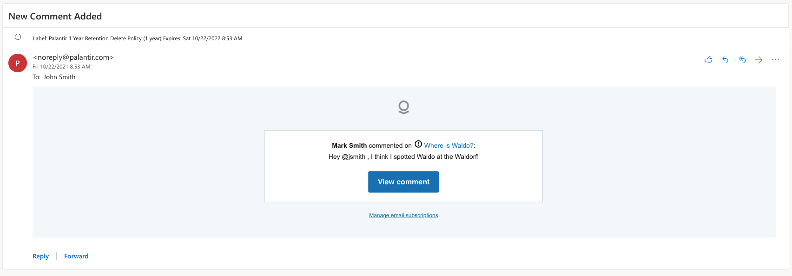
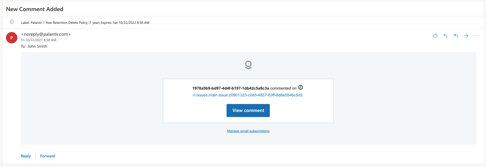
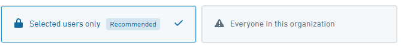

The platform supports sending email notifications related to actions taken within the platform. By default, email notifications are automatically scrubbed of any sensitive customer information, instead, only containing a link to the related event within the platform. This email scrubbing is a security feature called email content redaction and has controllable properties.
Email redaction ensures that sensitive information does not leave the Foundry platform. However, after acknowledging the potential risk through an in-platform prompt, you have the following options:
Below is an example of an unredacted email followed by an example of a redacted email:


Configure email redaction in the Content redaction tab of Control Panel.
By default, email redaction applies to all notifications destined to all users. Email redaction has two modes of operation: Selected users only, or Everyone in this Organization.

With the Selected users only configuration, you must specify the destination domains or user groups that should receive complete, unredacted email notifications. This is the default mode when no users or domains are specified.
You may specify domains and subdomains that you wish to receive complete, unredacted email notifications. All domains and subdomains must be specified in the @domain.com format.
Alternatively, you may specify which user groups should receive complete, unredacted email notifications. This provides granular control over when and who should receive email from the Foundry platform containing complete, unredacted data. Any recipient in a specified group will receive complete, unredacted email notifications.
Domain/subdomain conditions and user group conditions are disjunctive within and across condition types. If both condition types are specified, a user that meets any of the domain/subdomain conditions or any of the user group conditions will receive complete, unredacted email notifications.
Once your configuration has been made, select Save Changes and proceed through the risk acknowledgment prompt.
With the Everyone in this Organization configuration, email redaction is disabled for all recipients. All users on all domains will receive complete, unredacted email notifications.
Using this mode is strongly discouraged, as it greatly increases the risks of unintentional data spillage. Depending on an organization's policies and threat model, the risks may be deemed acceptable as a trade-off for user preferences. However, Palantir recommends that you do not use this mode.
Once your configuration has been made, select Save Changes and proceed through the risk acknowledgment prompt.
In certain circumstances, you might require only certain emails to be redacted. To this end, you are able to disable redaction for emails coming from specific action types during action type configuration in Ontology Manager.
This is a feature that you enable for the whole organization, and, once enabled, authorized users can configure which action types can disable redaction. Authorized users are users with the ontology:override-notification-redaction operation, which is granted by default to users with the ontology:manage-ontology operation.
To use this feature, you need to first enable Allow override redaction at the action type level setting in the Content redaction tab of Control Panel.
For detailed instructions on configuring specific action types after enabling this setting, visit the notification settings in action type documentation page.